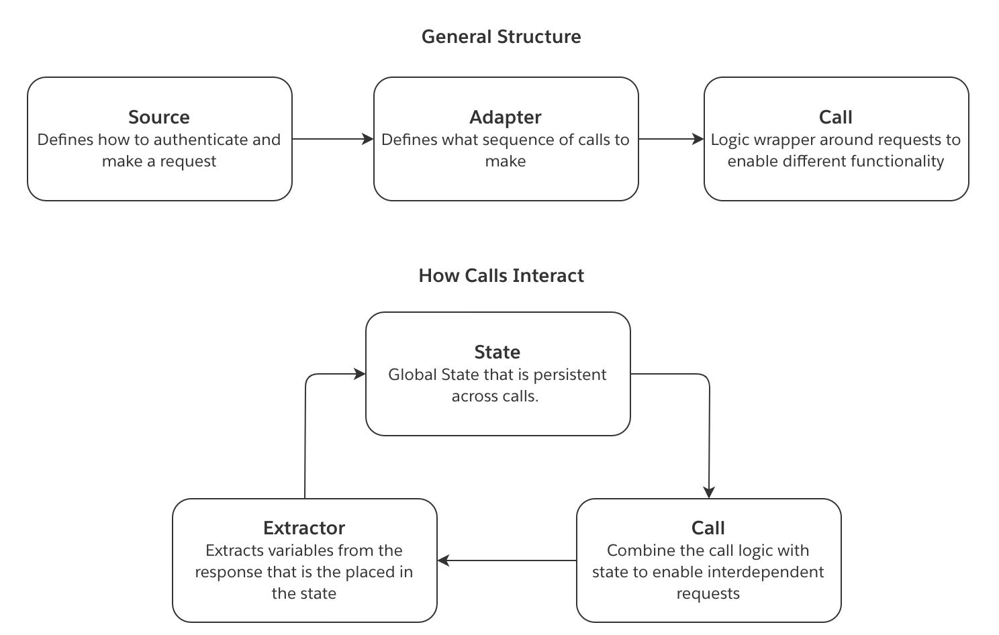

:::callout{theme="danger"}
The legacy REST API options documented here using the custom magritte-rest-v2 source type are for historical reference only. This feature is no longer under active development and should not be used.
Use instead the REST API source type that supports:
The REST API source type can also be used to connect to on-premise REST APIs using agent proxy egress policies. :::
The following concepts illustrate the flow of information when using a magritte-rest-v2 source.
state can then be injected into the proceeding calls. This allows for interdependent requests.This diagram illustrates how the above concepts interact:

magritte-rest-v2 sourceTo create a magritte-rest-v2 source, select New source from the Sources tab of the Data Connection application. Then, select the option to Add Custom Source. The magritte-rest-v2 plugin is primarily configured via a YAML editor.
The following examples provide YAML code snippets necessary for configuration of different authentication types:
This documentation also provides additional guidance on these topics:
type: magritte-rest-v2
sourceMap:
my_api:
type: magritte-rest
headers:
Authorization: 'Bearer {{token}}'
url: "https://some-api.com/"
Also known as Basic authentication.
type: magritte-rest-v2
sourceMap:
my_api:
type: magritte-rest
usernamePassword: '{{username}}:{{password}}'
url: "https://some-api.com/"
type: magritte-rest-v2
sourceMap:
my_api:
type: magritte-rest-auth-call-source
url: "https://some-api.com/"
requestMimeType: application/json
body: '{"username": "{{username}}", "password": "{{password}}"}'
authCalls: []
type: magritte-rest-v2
sourceMap:
my_api:
type: magritte-rest-auth-call-source
url: "https://some-api.com/"
parameters:
username: "{{username}}"
password: "{{password}}"
authCalls: []
The following configuration can be used to submit a URL-encoded form body to an /auth endpoint in order to use the returned token in a sync. You should only use formBody if your endpoint has a form type; otherwise use body.
type: magritte-rest-v2
sourceMap:
my_api:
type: magritte-rest-auth-call-source
url: "https://some-api.com/"
headers:
Authorization: 'Bearer {%token%}'
authCalls:
- type: magritte-rest-call
path: /auth
method: POST
formBody:
username: '{{username}}'
password: '{{password}}'
extractor:
- type: magritte-rest-json-extractor
assign:
token: /token
If the returned token regularly expires prior to the completion of your syncs, use the authExpiration parameter to specify how often the calls under authCalls should be retried. Set the value of authExpiration to be no longer than the validity period of the token returned by the /auth endpoint.
type: magritte-rest-v2
sourceMap:
my_api:
type: magritte-rest-auth-call-source
url: "https://some-api.com/"
authExpiration: 30m
headers:
Authorization: 'Bearer {%token%}'
authCalls:
- type: magritte-rest-call
path: /auth
method: POST
formBody:
username: '{{username}}'
password: '{{password}}'
extractor:
- type: magritte-rest-json-extractor
assign:
token: /token
When your API uses security headers like subscription keys in order to log in successfully, you will have to add an additional header section underneath authCalls. This second header section is used specifically for the authentication call, and is entirely separate from the first header section; all other API calls (aside from the authentication call) use the first header section. Not having these header sections properly configured may result in 401 authentication failures. An example is given below.
type: magritte-rest-v2
sourceMap:
my_api:
type: magritte-rest-auth-call-source
url: "https://some-api.com/"
headers:
X-service-identifier: SWN
Authorization: 'Bearer {%token%}'
Ocp-Apim-Subscription-Key: '{{subscriptionKey}}'
authCalls:
- type: magritte-rest-call
path: /auth
method: POST
headers:
X-service-identifier: SWN
Ocp-Apim-Subscription-Key: '{{subscriptionKey}}'
body:
username: '{{username}}'
password: '{{password}}'
extractor:
- type: magritte-rest-json-extractor
assign:
token: /token
This enables authentication against one domain in order to use the token on another domain:
type: magritte-rest-v2
sourceMap:
auth_api:
type: magritte-rest
url: "https://auth.api.com"
data_api:
type: magritte-rest-auth-call-source
url: "https://data-api.com/"
headers:
Authorization: 'Bearer {%token%}'
authCalls:
- type: magritte-rest-call
source: auth_api
path: /auth
method: POST
formBody:
username: '{{username}}'
password: '{{password}}'
extractor:
- type: magritte-rest-json-extractor
assign:
token: /token
Sources support supplying a Java KeyStore (JKS) file for authentication:
type: magritte-rest-v2
sourceMap:
my_api:
type: magritte-rest
url: "https://some-api.com/"
keystorePath: "/my/keystore/keystore.jks"
keystorePassword: "{{password}}"
The following curl: curl -v http://example.com/do.asmx --ntlm -u DOMAIN\\username:password can be translated as:
type: magritte-rest-ntlm-source
url: http://example.com
user: "{{username}}"
password: "{{password}}"
domain: DOMAIN (optional)
workstation: (optional) the name of your machine as given by $(hostname)
type: magritte-rest-v2
sourceMap:
my_api:
type: magritte-rest
url: http://example.com
proxy: 'http://my-proxy:8888/' # you can also pass an IP Address
You can also pass in proxy credentials in the config:
type: magritte-rest-v2
sourceMap:
my_api:
type: magritte-rest
url: http://example.com
proxy:
url: 'http://my-proxy:8888/' # you can also pass an IP Address
username: 'my-proxy-username'
password: 'my-proxy-password'
If you see errors like javax.net.ssl.SSLHandshakeException you might need to add the server's certificate to agent's trust-store, following this guide.
For debugging purposes only, you might also disable checking of the certificate, which corresponds to running curl with the insecure -k flag (curl -k https://some-domain):
type: magritte-rest-v2
sourceMap:
my_api:
type: magritte-rest
url: https://example.com
insecure: true
By default, the plugin will connect only over modern TLS versions (TLSv1.2 and TLSv1.3).
To use an older version, specify the TLS version in the config:
type: magritte-rest-v2
sourceMap:
my_api:
type: magritte-rest
url: https://example.com
tlsVersion: 'TLSv1.1'
Supported versions: TLSv1.3, TLSv1.2, TLSv1.1, TLSv1, SSLv3.
To create a sync, from the top of your magritte-rest-v2 Source click the "Create Sync" button. The Basic view will guide you through creating one or more calls to fetch data. The Advanced view will enable you to edit the YAML configuration directly. You can toggle between these views at the top right of the page.
A sync requires at least one call. In the basic view, you can create new calls by clicking the "Add" button under the "Perform calls in sequence" heading.
You can then specify if the call should be made once by selecting "Single Call" or multiple times based on a loop, a time range, a date range, a list, or by paging over results.
Each call requires a path which will be appended to the source URL when queried. For example, if the source has the url https://my-ap-source.com using a path of /api/v1/get-documents would result in the call querying https://my-ap-source.com/api/v1/get-documents.
This section presents a list of YAML configurations that address common scenarios:
This documentation also provides additional guidance on these topics:
Assume an API that serves CSV reports for each date at /daily_data?date=2020-01-01. In this example, we would like to ingest these reports as they become available. To achieve this, we could schedule a daily sync that will remember the last date for which reports were synced, in order to automatically fetch the reports for unsynced dates up to today:
type: rest-source-adapter2
outputFileType: csv
incrementalStateVars:
incremental_date_to_query: '2020-01-01'
initialStateVars:
yesterday:
type: magritte-rest-datetime-expression
offset: '-P1D'
timezone: UTC
formatString: 'yyyy-MM-dd'
restCalls:
- type: magritte-increasing-date-param-call
checkConditionFirst: true
paramToIncrease: date_to_query
increaseBy: P1D
initValue: '{%incremental_date_to_query%}'
stopValue: '{%yesterday%}'
format: 'yyyy-MM-dd'
method: GET
path: '/daily_data'
parameters:
date: '{%date_to_query%}'
extractor:
- type: magritte-rest-string-extractor
fromStateVar: 'date_to_query'
var: 'incremental_date_to_query'
You may find it helpful to compare the above configuration with an equivalent Python snippet.
import requests
from datetime import datetime, timedelta
incremental_state = load_incremental_state()
if incremental_state is None:
incremental_state = {'incremental_date_to_query': '2020-01-01'}
yesterday = datetime.utcnow() - timedelta(days=1)
date_to_query = incremental_state['incremental_date_to_query']
date_to_query = datetime.strptime(date_to_query, '%Y-%m-%d')
while yesterday >= date_to_query:
response = requests.get(source.url + '/daily_data', params={
'date': date_to_query.strftime('%Y-%m-%d')
})
upload(response)
date_to_query += timedelta(days=1)
incremental_date_to_query = date_to_query
save_incremental_state({'incremental_date_to_query': incremental_date_to_query})
type: rest-source-adapter2
outputFileType: json
restCalls:
- type: magritte-paging-inc-param-call
paramToIncrease: page
initValue: 0
increaseBy: 1
method: GET
path: '/data'
parameters:
page: '{%page%}'
entries_per_page: 1000
extractor:
- type: magritte-rest-json-extractor
assign:
page_items: '/items'
condition:
type: magritte-rest-non-empty-condition
var: page_items
If you are a developer, you might find it easier to understand the above configuration by comparing it with an equivalent python snippet:
import requests
page = 0
while True:
response = requests.get(source.url + '/data', params={
'page': page,
'entries_per_page': 1000
})
upload(response)
page += 1
page_items = response.json().get('items')
if not page_items:
break
Here is an example ElasticSearch basic search API:
type: rest-source-adapter2
outputFileType: json
restCalls:
- type: magritte-paging-inc-param-call
paramToIncrease: offset
initValue: 0
increaseBy: 100
method: POST
path: '/_search'
body: |-
{
"from": {%offset%},
"size": 100
}
extractor:
- type: magritte-rest-json-extractor
assign:
hits: '/hits'
condition:
type: magritte-rest-non-empty-condition
var: hits
Next page tokens are also often known as cursor, continuation, or pagination tokens.
Here is an example ElasticSearch search and scrolling API:
type: rest-source-adapter2
outputFileType: json
restCalls:
- type: magritte-rest-call
method: GET
path: /my-es-index/_search?scroll=1m
parameters:
scroll: 1m
extractor:
- type: json
assign:
scroll_id: /_scroll_id
- type: magritte-do-while-call
method: GET
checkConditionFirst: true
path: /_search/scroll
parameters:
scroll: 1m
scroll_id: '{%scroll_id%}'
extractor:
- type: json
assign:
scroll_id: /_scroll_id
hits: /hits
timeBetweenCalls: 0s
condition:
type: magritte-rest-non-empty-condition
var: hits
Here is an example AWS nextToken paginated API:
type: rest-source-adapter2
outputFileType: json
restCalls:
- type: magritte-rest-call
method: POST
path: /findings/list
extractor:
- type: json
assign:
nextToken: /nextToken
allowNull: false
allowMissingField: true
requestMimeType: application/json
body: '{}'
- type: magritte-do-while-call
method: POST
checkConditionFirst: true
path: /findings/list
extractor:
- type: json
assign:
findings: /findings
nextToken: /nextToken
allowNull: false
allowMissingField: true
condition:
type: magritte-rest-available-condition
var: nextToken
timeBetweenCalls: 0s
requestMimeType: application/json
body: '{"nextToken":"{%nextToken%}"}'
The following sync is for an API that requires three interdependent steps.
status defining if the report is done.type: rest-source-adapter2
outputFileType: json
restCalls:
- type: magritte-rest-call
path: '/findRelevantId'
method: POST
requestMimeType: application/json
extractor:
- type: json
assign:
id: /id
body: >
body
saveResponse: false
- type: magritte-do-while-call
path: '/reportReady'
method: GET
parameters:
id: '{%id%}'
extractor:
- type: magritte-rest-json-extractor
assign:
status: /status
condition:
type: "magritte-rest-regex-condition"
var: status
matches: "(processing|queued)"
timeBetweenCalls: 8s
saveResponse: false
- type: magritte-rest-call
path: '/getReport/{%id%}'
method: GET
requestMimeType: application/json
The Extractor defines what fields to save in the state. Note that these variables are available in all following REST calls. To inject a saved variable, surround the variable name by {%%}. The second do-while call implements a loop that sends a request until the status variable is no longer queued or processing.
Some APIs do not have a status endpoint and instead require to poll the getReport endpoint, providing an empty response until the report is ready. The following config shows how to deal with such scenario:
type: rest-source-adapter2
outputFileType: json
restCalls:
- type: magritte-do-while-call
path: '/getReport/{%id%}'
method: GET
extractor:
- type: magritte-rest-string-extractor
var: response
condition:
type: magritte-rest-not-condition
condition:
type: magritte-rest-non-empty-condition
var: response
timeBetweenCalls: 8s
Or if the getReport endpoint would return a 204 status code until the report is ready, it could be handled as:
type: rest-source-adapter2
outputFileType: json
restCalls:
- type: magritte-do-while-call
path: '/getReport/{%id%}'
method: GET
extractor:
- type: magritte-rest-http-status-code-extractor
assign: responseCode
condition:
type: magritte-rest-regex-condition
var: responseCode
matches: 204
timeBetweenCalls: 8s
This plugin supports incremental Syncs. To do this, pick the variables from the state that you want to save as the Sync's incremental state by specifying incrementalStateVars:
type: rest-source-adapter2
incrementalStateVars:
var_name: initial_value # Initial value used if no incremental metadata is found
type: rest-source-adapter2
incrementalStateVars:
lastModifiedDate: 20190101
The saved incremental state will be used as the initial state when running a sync.
More detailed example:
type: rest-source-adapter2
outputFileType: json
incrementalStateVars:
lastModifiedTime: 'Some initial start time'
initialStateVars:
# get the current time
currentTime:
type: magritte-rest-datetime-expression
timezone: 'Some timezone, e.g. Europe/Paris'
formatString: 'Some format string https://docs.oracle.com/javase/8/docs/api/ \
java/time/format/DateTimeFormatter.html'
restCalls:
- type: magritte-rest-call
path: /my/values
method: GET
parameters:
from: '{%lastModifiedTime%}'
until: '{%currentTime%}'
extractor:
# Update the last modified time to be the current time
- type: magritte-rest-string-extractor
var: lastModifiedTime
fromStateVar: currentTime
If you add more than one API source, in each REST call you must specify the source you want to use with the source attribute.
The sync config contains the following fields.
type: rest-source-adapter2
restCalls: [calls] # see documentation for Calls below
initialStateVars:
{variableName}: {variableValue}
incrementalStateVars:
{variableName}: {variableValue}
outputFileType: json # required for oneFilePerResponse
cacheToDisk: defaults to True
oneFilePerResponse: defaults to True; when set to True "outputFileType" is required
To set an output file type with outputFileType, oneFilePerResponse must be true, otherwise the responses will be saved as rows in a dataset. See Storing response below for recommended options based on your response type.
Recommended for binary responses or total sum of response size > 100MB:
cacheToDisk: true
outputFileType: [any file format, e.g. txt, json, jpg]
oneFilePerResponse: true # default, don't need to specify
For non-binary responses up to couple of MB and a total sum of response size below 100MB, we recommend the following:
cacheToDisk: false
oneFilePerResponse: false
For a sync where the responses do not fit on disk, but the total sync time is low (under 3 minutes), we recommend the following:
cacheToDisk: false
oneFilePerResponse: true
outputFileType: [any file format, e.g. txt, json, jpg]
All calls inherit from a base RestCall object, which contains the following fields:
type: Rest call type
path: Endpoint
method: GET | POST | PUT | PATCH
# All below are optional
source: The API source to use for this call. # This is required if there are multiple api sources.
parameters: Map of parameters to pass with request # Defaults to empty map
saveResponse: Should the response be saved in foundry # Defaults to True
body: Body to post
formBody:
# Map of parameters to use in a x-www-form-urlencoded post.
# Optional, only use instead of body when hitting a x-www-form-urlencoded endpoint.
param1: value1
requestMimeType: application/json
headers: Request headers, these append to the source headers, but replace matching headers
# validResponseCodes: optional, set of HTTP response codes for which the API caller does not terminate.
# If not set, valid HTTP response codes are 200, 201 and 204.
validResponseCodes:
- 200
- 201
- 204
# retries: defaults to 0. Requests can fail due to cancellation, a connectivity problem or timeout.
# Enables setting the desired number of retries per request made by this call.
retries: 0
extractor: A list of extractor object, see Extractors
# Filename template e.g. 'data_{%page%}',
# otherwise the filename will be '[sourceName][path][parameters]'
filename: '<dont override if not necessary>'
addTimestampToFilename: Defaults to true, whether timestamp should be appended to filename
Inheriting calls can add additional fields to the ones above.
type: magritte-rest-call
Performs a single request. Uses the same YAML setup as the core call.
Performs the same request with an increasing parameter while some condition is met. Often used for paging. Note that the parameter that is being increased should have {%paramToIncrease%} as its value if included in either the path or in the parameters: section.
type: magritte-paging-inc-param-call
paramToIncrease: state key to param to increase.
checkConditionFirst: when set to "true", equivalent to a while loop. When "false" (default) equivalent to do-while loop.
initValue: Initial value of increasing parameter.
increaseBy: How much to increase the parameter by in each iteration.
onEach: List of calls to run in each iteration. Optional and used to do nested calls.
condition: Condition object that keeps requests going. As long as the condition is true,
a new request is created. The condition is checked only after the first request,
so this acts similarly to a do-while loop.
maxIterationsAllowed: How many iterations to run before throwing an error.
timeBetweenCalls: (optional) time to wait between requests
Performs the same request with an increasing date parameter until some condition is met. Used for iterating through dates. This uses LocalDate and Period types, so the most granular increment available is one day. This only works for date-only matches. If you need to increment more granularly, see `magritte-increasing-time-param-call``.
type: magritte-increasing-date-param-call
paramToIncrease: state key to param to increase.
checkConditionFirst: when set to "true", equivalent to a while loop. When "false" (default) equivalent to do-while loop.
initValue: Initial value of increasing parameter.
increaseBy: How much to increase the parameter by in each iteration, parseable as a java.time.Period
stopValue: The last date which will be used, including this value if applicable.
format: The format (java.time.format.DateTimeFormatter) for the DateTime parameter in each call, the same
as initValue and stopValue.
timeBetweenCalls: (optional) time to wait between requests
Performs the same request with an increasing DateTime parameter until some condition is met. Used for iterating through DateTimes. Note, this uses OffsetDateTime and Duration types, in contrast to the magritte-incrementing-date-param-call. OffsetDateTime does not take into account any changes with Daylight Savings Time. Make sure this will not cause unexpected gaps with how the API handles DateTimes.
type: magritte-increasing-time-param-call
paramToIncrease: state key to param to increase.
checkConditionFirst: when set to "true", equivalent to a while loop. When "false" (default) equivalent to
do-while loop.
initValue: Initial value of increasing parameter.
increaseBy: How much to increase the parameter by in each iteration, parseable as a java.time.Duration
stopValue: The last DateTime which will be used, including this value if applicable.
format: The format (java.time.format.DateTimeFormatter) for the DateTime parameter in each call, the same
as initValue and stopValue.
timeBetweenCalls: (optional) time to wait between requests
Performs a request til a specified condition is no longer met. In addition to the core call fields, two fields should be provided.
type: magritte-do-while-call
timeBetweenCalls: time to wait between requests
checkConditionFirst: when set to "true", equivalent to a while loop. When "false" (default) equivalent to do-while loop.
condition: Condition object that keeps requests going. As long as the condition is true,
a new request is created.
maxIterationsAllowed: How many iterations to run before throwing an error. Defaults to 50.
Optionally, an initial state can be provided to bootstrap the first call.
For example:
initialState:
nextPage: ""
In the case where an initial state and an incremental state conflict, the incremental state will override the initial State.
Performs a request for each element in a state element that is iterable.
type: magritte-iterable-state-call
timeBetweenCalls: 5s # Throttle the time between each call
iterableField: The state key to iterate over. This variable must be iterable.
iteratorExtractor: List of extractors to run on each element in the iterable.
onEach: List of calls to run in each iteration. Optional and used to do nested calls.
maxIterationsAllowed: How many iterations to run before throwing an error. Defaults to 50.
parallelism: Integer number of threads to use for the sync. Assumptions/limitations include no side effect in request,
no guarantee as to order that calls are made or their responses update state, no time between calls.
This field is optional and defaults to 1.
An Extractor defines how to save variables from a response or a state variable into the State. You can reference a variable from state in URL, URL parameters, or in the request body as {%var_name_1%}.
The default behavior of Extractors is to extract values from the Response. Optionally you can add the fromStateVar config to extract from the State. This allows you to run different Extractors one after the other, as an example:
type: rest-source-adapter2
outputFileType: csv
restCalls:
- type: magritte-rest-call
path: /my/path/index.html
source: mysource
method: GET
extractor:
- type: magritte-rest-json-extractor
assign:
full_name: /my/field/full_name
- type: magritte-rest-regexp-extractor
fromStateVar: full_name
assign:
names: '\w+'
All Extractors have a condition check built-in that can be used:
condition: Check whether the input state meets the given condition. If not, do not run the extractor.
All the JSON Extractors use Jackson JsonNode â and follow the same notation.
Quick guide on referencing fields:
Given the JSON {"id":1}:
"/id" will return 1"/" will return {"id":1}Given a list, such as [1,2,3] or [{"id":1},{"id":2}]:
"" will return the list.Wildcards may be used to reference sub-indices or fields of all items in a list. For example:
Given a field containing nested lists, such as { "result": [[1], [2, 3, 4]] }:
"/result/*/0" will return [1,2].Given a field containing a list of objects such as { "result": [{ "foo": 1}, {"foo": 2}]}:
"/result/*/foo" will return [1,2].An Extractor that simply places a field in the response into the State. The YAML setup is map of variables to save. The left string is the name of the variable in the State, the right string is the path to the variable.
The JSON Extractor supports wildcards - given the JSON [{"id":1}, {"id":2}], using /*/id will return [1,2], while using "" (empty string) will return the full list.
type: json
assign:
var_name_1: /field-name1
var_name_2: /field_name2
By default, the call will fail if the extracted field has a null value or is not present.
To prevent the call from failing in these situations, the following flags are available:
allowMissingField to not fail when fields are not present or if a field has a null value.allowNull to not fail when a present field has a null value.allowUnescapedControlChars to not fail when the JSON response contains unescaped control characters such as \n.type: json
allowMissingField: true
assign:
var_name_1: /field-name1
var_name_2: /field_name2
type: magritte-rest-append-json-extractor
appendFrom: /field in response that contains an array to append from
appendFromItem: /field per array element to extract # Optional
appendTo: variable name in state to append elements to.
If the response looks like:
{
"things": [{"name": "dummy", "id": "1"},
{"name": "dummy2", "id": "2"}]
}
then the YAML:
type: magritte-rest-append-json-extractor
appendFrom: /things
appendFromItem: /id
appendTo: var
would result in appending [1,2] to var.
Alternatively one could use:
type: magritte-rest-append-json-extractor
appendFrom: /things
appendTo: var
which would result in appending [{"name": "dummy", "id": "1"}, {"name": "dummy", "id": "2"}] to the state var.
type: magritte-rest-max-json-extractor
list: /field in response that contains an array to max over.
item: /field per array element to extract
var: state variable to save the max value to.
previousVal: state variable to get the current max value from# Optional
If the response looks like:
{
"things": [{"name": "dummy", "value": "1"},
{"name": "dummy2", "value": "2"}]
}
then the YAML:
type: magritte-rest-max-json-extractor
list: /things
item: /id
var: max_value
would result in saving 2 to max_value.
Alternatively, assuming we already have the value 5 in max_value then:
type: magritte-rest-max-json-extractor
list: /things
item: /id
var: max_value
previousVal: max_value
would leave max_value equal to 5.
An Extractor for the Streaming JSON (NDJSON) format where the response contains a JSON file at each line. Usually this format is used to return datasets, thus every line should have a JSON in the same format.
The Extractor supports extracting a variable from a path from the last line of the NDJSON file.
type: magritte-rest-last-streaming-json-extractor
nodePath: /id # if the json looks like {'value':'somevalue', 'id':1} this would extract the 1
varName: id # name of the variable in the state to save the value to
saveNulls: false # whether nulls should be saved to the var or skipped (default: false)
The Extractor supports extracting a variable from each line of the NDJSON file into an array as well as extracting the last encountered variable. Once the Extractor encounters a null (be it a missing line, a missing key or a null value under the key) it will stop looping.
type: magritte-rest-last-streaming-json-extractor
nodePath: /id # if the json looks like {'value':'somevalue', 'id':1} this would extract the 1
arrayVarName: ids # name of the variable in the state to save the array to
optional<lastVarName>: lastId # name of the variable in the state to save the last value of the array to
optional<limit>: 10 # limit the number of lines to parse, you can use this in addition to lastVarName and
# couple it with an iterableStateCall to limit the number of call per extract run
An Extractor that simply places a field in the response into the State. The YAML setup is map of variables to save. The left string is the name of the variable in the State, the right string is the path to the variable using xpath notation.
type: magritte-rest-xml-extractor
assign:
var_name_1: /top_level_tag/second_level_tag/text()
var_name_2: /top_level_tag/text()
Extracts from HTML by CSS selector (supported selector syntax â). An attribute may be specified for extraction; if left blank will return the selected Element(s)'s text. If first is true, the Extractor will attempt to return the first Element as a String or Number. This Extractor can also be used for ill-formed XML.
type: magritte-rest-html-extractor
var: 'links'
selector: "a[href$='pdf']"
attribute: href # Optional
first: false # Optional, defaults to false
The provided example will save all anchor tag hypermedia references ending in .pdf as an array of strings in the links variable.
Extracts a string and returns a new state with this string assigned to the variable defined.
type: magritte-rest-string-extractor
var: 'variable_name'
Extracts a substring of a variable in the state and saves that to another state.
type: magritte-rest-substr-extractor
start: 2 # starting index of
length: 5 # Optional, length of substring (includes start index).
# If not set, substring will be the entire string after the start index.
assign: var_to_save_substring_to
# var: state_variable_to_substring - DEPRECATED, use fromStateVar instead!
An Extractor that extract one or more regexp from a string. The yaml setup is map of variables to save. The left string is the name of the variable in the State, the right string is the regexp to match.
type: magritte-rest-regexp-extractor
assign:
var_name_1: (1(.*)3|a(.*)c)
var_name_2: (NotInString)
If the string in input is:
abcHelloWorld123
The response will look like that:
{
"var_name_1": ["abc", "123"],
"var_name_2": []
}
Here is a full example of use to extract a CSV link from an HTML and then get the CSV:
type: rest-source-adapter2
outputFileType: csv
restCalls:
- type: magritte-rest-call
path: /my/path/index.html
source: mysource
method: GET
extractor:
- type: magritte-rest-regexp-extractor
assign:
file_paths: '(?<=https://www\.mysite\.com)(.*filename.*csv)(?=\")'
saveResponse: false
- type: magritte-iterable-state-call
source: mysource
timeBetweenCalls: 1s
iterableField: file_paths
method: GET
path: '{%path%}'
saveResponse: true
iteratorExtractor:
- type: magritte-rest-string-extractor
var: 'path'
An Extractor that replaces one regexp in a string, similar to the PySpark function pyspark.sql.functions.regexp_replace:
type: magritte-rest-regexp-replace-extractor
var: result # `state` variable that will be created or overridden with the result string
pattern: "[a]" # regex to look for
replacement: "A" # new string to put in place of the regex matches
The Append Array Extractor takes in a state variable and pushes it to the end of an array. This Extractor is useful in collecting paths to pass to an iterable state call.
type: magritte-rest-append-array-extractor
appendTo: target # If the target uninitialized, the extractor will initialize an empty array.
fromStateVar: args # Accepts either a single argument (append) or a collection (extend)
Here is a full example:
type: rest-source-adapter2
restCalls:
- type: magritte-paging-inc-param-call
method: GET
path: category
paramToIncrease: page
initValue: 0
increaseBy: 100
parameters:
start_element: '{%page%}'
num_elements: 100
extractor:
- type: magritte-rest-json-extractor
assign:
res: /response/categories
- type: magritte-rest-append-array-extractor
fromStateVar: res
appendTo: categories
until:
type: magritte-rest-non-empty-condition
var: res
- type: magritte-iterable-state-call
method: GET
path: 'category/{%category%}'
timeBetweenCalls: 5s
iterableField: categories
iteratorExtractor:
- type: magritte-rest-string-extractor
var: category
outputFileType: json
Extracts the HTTP status code from a response.
type: magritte-rest-http-status-code-extractor
assign: 'variable_name'
Extracts cookies from the Set-Cookie header in a response.
type: magritte-rest-set-cookie-header-extractor
assign:
var_name_1: cookie_name_in_set_cookie_header
Extracts an element from a given array.
type: magritte-rest-array-element-extractor
fromStateVar: Array var to extract an element from.
index: The index of the element in the input array to extract.
toStateVar: Name of the variable to extract the element to.
The given index parameter can be negative to start at the end of the array, e.g. -1 to extract the last element.
An extractor that takes in a variable, casts the type of the variable using some pre-defined casting logic, and saves the result to a destination variable.
type: magritte-rest-typecast-extractor
fromStateVar: Input variable to the extractor.
toStateVar: Output variable of the extractor.
toType: Type of the output variable after casting.
The toType parameter must be a valid Java type within the 'java.lang.' package.
Examples of valid types include 'String', 'Integer' but also the full 'java.lang' package and name: 'java.lang.Double'.
For type casting to work, there must be a pre-defined method to cast the type of the input variable to the output type. This means that there must be code within the plugin to transform variables from and to the configured types.
Note: Casting a java.util.Arrays of 2 strings a and b into a String will give you [a, b], whereas casting a com.fasterxml.jackson.databind.node.ArrayNode of 2 strings a and b into a String will give you ["a","b"] as it is the string representation of a JSON array.
The conditions work similar to ElasticSearch conditions. The current supported conditions are:
type: magritte-rest-regex-condition
var: a state variable key
matches: a valid regular expression
Example:
type: "magritte-rest-regex-condition"
var: my_state_variable
matches: '^\d+$'
Checks if the given variable is available (whether it is assigned a non-null value).
type: magritte-rest-available-condition
var: a state variable key
Example:
type: magritte-rest-available-condition
var: my_state_variable
Check if the given variable is available and not empty.
type: magritte-rest-non-empty-condition
var: a state variable key
Example:
type: magritte-rest-non-empty-condition
var: my_array_state_variable
Negates the given sub-condition.
type: magritte-rest-not-condition
condition: A condition to negate.
Example:
type: magritte-rest-not-condition
condition:
type: magritte-rest-available-condition
var: my_state_variable
Requires all the given sub-conditions to be true.
type: magritte-rest-and-condition
conditions: A list of conditions to AND over.
Example:
type: magritte-rest-and-condition
conditions:
- type: magritte-rest-available-condition
var: my_state_variable
- type: magritte-rest-non-empty-condition
var: my_array-state_variable
type: magritte-rest-binary-condition
toCompare:
left: `state` key to compare on the left side of condition
right: `state` key to compare on the right side of condition
op: One of the following "=", "<", ">", "<=", ">="
Example:
type: magritte-rest-binary-condition
toCompare:
left: a_state_variable
right: another_state_variable
op: <
An expression can be used to compute certain values anywhere during a Magritte REST sync. In contrast to extractors, results of expressions are not dependent on the state of a sync.
An expression that will supply a certain date and/or time. Starts by taking the current date/time and adding the given offset(s).
Other parameters for this initial state variable (e.g. should be put in a top level initialStateVars: block):
type: magritte-rest-datetime-expression
offset: Optional. Time to add or subtract from the current date/time. Can be negative.
timezone: Optional. Which timezone to calculate the date/time for. Defaults to UTC.
formatString: Optional. Output format of the calculated date and time.
Defaults to ISO 8601 datetime with offset.
For valid offsets, see Java 8 Duration documentation â.
For valid timezones, see Java 8 ZoneId documentation â.
For valid output format strings, see Java 8 DateTimeFormatter â.
An expression that will provide a literal value.
The type of the literal will be automatically deduced and can be found by looking at the logs of the literal expression. Current supported types are strings, numbers, and lists.
type: magritte-rest-literal-expression
literalValue: Required.
Example:
type: magritte-rest-literal-expression
literalValue: 270
List example:
type: magritte-rest-literal-expression
literalValue: ["it's", "a", "kind", "of", "magic"]
When ingesting JSON data:
{
"response": {
"size": 1000,
"items": [
{ "item id": 1, "status": { "modifiedAt": "2020-02-11" }, "com.palantir.metadata": { ... } },
{ "item id": 2, "status": { "modifiedAt": "2020-02-12" }, "com.palantir.metadata": { ... } },
{ "item id": 3, "status": { "modifiedAt": "2020-02-13" }, "com.palantir.metadata": { ... } }
]
}
}
With the magritte-rest-v2 plugin, each JSON response will be saved as a separate file in a dataset.
To easily process this data, put a schema on the raw dataset:
{
"fieldSchemaList": [
{
"type": "STRING",
"name": "row",
"nullable": null,
"userDefinedTypeClass": null,
"customMetadata": {},
"arraySubtype": null,
"precision": null,
"scale": null,
"mapKeyType": null,
"mapValueType": null,
"subSchemas": null
}
],
"dataFrameReaderClass": "com.palantir.foundry.spark.input.DataSourceDataFrameReader",
"customMetadata": {
"format": "text",
"options": {}
}
}
To clean this dataset and have each item as a separate row in the dataset and item fields as columns, create a Python transforms repository.
Add the following snippet to a new utils/read_json.py file:
from pyspark.sql import functions as F
import json
import re
def flattenSchema(df, dontFlattenCols=[], jsonCols=[]):
new_cols = []
for col in df.schema:
_flattenSchema(col, [], new_cols, dontFlattenCols + jsonCols, jsonCols)
print(new_cols)
return df.select(new_cols)
def _flattenSchema(field, path, cols, dontFlattenCols, jsonCols):
curentPath = path + [field.name]
currentPathStr = '.'.join(curentPath)
if field.dataType.typeName() == 'struct' and currentPathStr not in dontFlattenCols:
for field2 in field.dataType.fields:
_flattenSchema(field2, curentPath, cols, dontFlattenCols, jsonCols)
else:
fullPath = '.'.join(['`{0}`'.format(col) for col in curentPath])
newName = '_'.join(curentPath)
sanitized = re.sub('[ ,;{}()\n\t\\.]', '_', newName)
if currentPathStr in jsonCols:
cols.append(F.to_json(fullPath).alias(sanitized))
else:
cols.append(F.col(fullPath).alias(sanitized))
def parse_json(df, node_path, spark):
rdd = df.dataframe().rdd.flatMap(get_json_rows(node_path))
df = spark.read.json(rdd)
return df
def get_json_rows(node_path):
def _get_json_object(row):
parsed_json = json.loads(row[0])
node = parsed_json
for segment in node_path:
node = node[segment]
return [json.dumps(x) for x in node]
return _get_json_object
You can then create a Python transform with code such as the following:
from transforms.api import transform, Input, Output
from utils import read_json
@transform(
output=Output("/output"),
json_raw=Input("/raw/json_files"),
)
def my_compute_function(json_raw, output, ctx):
df = read_json.parse_json(json_raw, ['response', 'items'], ctx.spark_session)
df = read_json.flattenSchema(df, jsonCols=['com.palantir.metadata'])
output.write_dataframe(df)
It will create a dataset:
item_id | status_modifiedAt | com_palantir_metadata
1 | "2020-02-11" | "{ ... }"
2 | "2020-02-12" | "{ ... }"
3 | "2020-02-13" | "{ ... }"